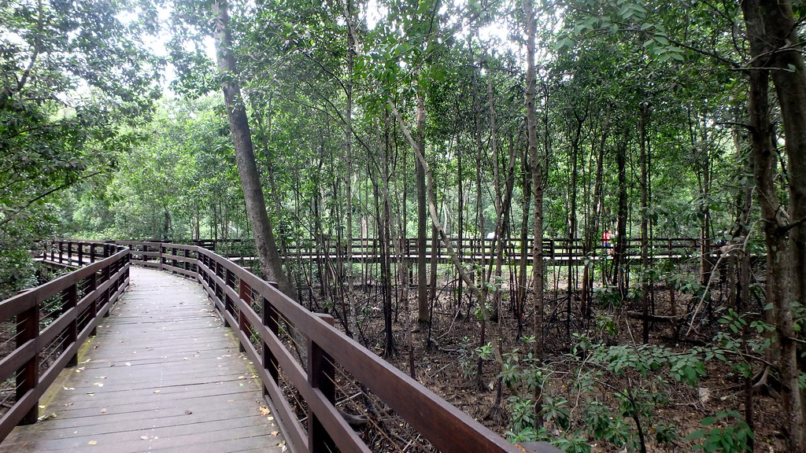

Pasir Ris Park
Mangrove Boardwalk
Mangroves are coastal forests that grow in brackish water influenced by tides. Mangrove ecosystems are highly diverse and important for the conservation
of biodiversity and combating climate change.
Mangrove forests have the ability to protect coastlines from the severe impacts of erosion and storms by breaking
up and slowing down waves as they reach the coast. This creates suitable conditions for the young of many fish species
to grow up in mangroves before venturing into the open waters.
Being a largely waterlogged ecosystem, the soils are deprived of oxygen and decomposition of dead organic material cannot occur. This allows mangroves to trap
carbon in the form of peat, preventing their release into the atmosphere as carbon dioxide or methane, the two biggest contributors to global climate change.
Read on to find out more about what you can find in mangroves!
Plants of mangrove forests
The plants living in the mangrove forest are faced with numerous challenges - salty waters, waterlogged soil, and loose sediments etc. Let's take a look at how they overcome these challenges.
Rhizophora spp.
Have you noticed some mangrove trees having roots that look like arches? You are looking at trees of the Rhizophora genus.
These prop roots help anchor the tree and provide a wider base that supports the tree in the loose mud it grows in. Many birds feed off the nectar from the flowers of Rhizophora spp.
including the Olive-backed Sunbird (Cinnyris jugularis).
Api-Api Putih (Avicennia alba)
Plants growing in the waterlogged soils of mangroves have another challenge to tackle - poor oxygen content of the mud. Roots need to uptake oxygen for respiration, but how do they do it?
The best genus of plants to observe this adaptation is the genus Avicennia. Poking through the mud are pencil-like roots known as pneumatophores that aid in gaseous exchange. About 20 - 30 cm tall, these pneumatophores are nearly straight-edged with pointed ends, spotting the mud to form the characteristic look of mangrove forests.
Animals in mangroves
Giant Golden Orb Weaver (Nephila pilipes)
See a shimmering line of silk hanging in the air? Spend a little time and look out for the spinner of the web.
The likelihood is that you would see a giant spider up to 20 cm long - this is the female. Males are much smaller, and this is a case of sexual dimorphism
in which the males and females of the same species exhibit distinct differences in their morphology.
One interesting trait of these spiders is their habit of "ballooning" in which they throw out thread that gets caught by the wind, allowing spiders to go airborn
and disperse to other areas.
Singapore Vinegar Crab (Episesarma singaporense)
A crab that is common in the mangroves of Singapore, one might spot them pretty quickly on top of mud mounds or on the exposed roots and stems of trees.
How might you identify this species? Look out for the bright red chelae (commonly called the "claws").
Together with mud lobsters, these crustaceans help increase oxygen content of the exposed mud by burrowing through the mud. These burrows also then act as a home
for other organisms after they are abandoned by the crustacean hosts.

Giant Mudskipper (Periophthalmodon schlosseri)
Fish out of water!? How do mudskippers do it?
The largest of all local mudskippers, it is clearly identifiable just by its size, growing up to 27 cm.
Gills usually work underwater and collapse in the air, preventing gaseous exchange in most fishes. The gills of the mudskippers, however, are supported by thick gill rods
that prevent the collapse, allowing exposure of the gill surfaces to air for gaseous exchange, allowing mudskippers to come out of the water.
Keep your eyes peeled and you might see some "skipping" movements that give them their namesake.